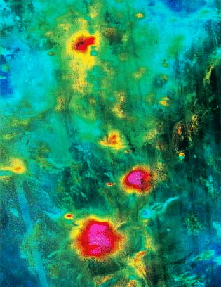
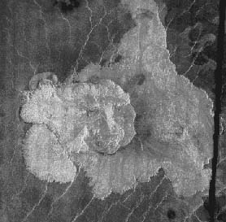

Volcanoes on Venus
|
 NASA image from Pioneer-Venus orbiter. |
Three Large VolcanoesVolcanic features are abundant on the surface of Venus and are presumably the source of the sulfuric acid in the Venus atmosphere. This image was formed from altimetry data from the Pioneer-Venus Orbiter. Simulated color is used to enhance small-scale structure. The simulated hues are based on color images recorded by the Venera 13/14 landing craft. The twisting bright features that cross the globe from the lower left toward the upper right are the highly fractured mountains and canyons of the eastern highland of Aphrodite Terra. Just to the right of center is the Atla region, dominated by three large volcanoes: Sapas, Maat and Ozza Montes. The image was produced by the Solar System visualization project and the Magellan Science team at the JPL Multimission Image Processing Laboratory.
|
|
 |
The volcanoes of Venus take unusual shapes, but they are all classified as "shield volcanoes" like those which occur in Hawaii. Using the high resolution of the side-looking radar, thicknesses for some of the features could be obtained from the Magellan data. Parallax measurements show that the thickness of the lobe of lava at the left-center edges of the image is variable but typically about 540 meters (1772 feet). The fan-shaped lava flow in the lower left is about 120 meters (394 feet) thick near its edge. Lava scarps on the east side of the complex are about 90 meters (295 feet) high. |

Venus Concepts
Solar System Concepts
Solar System Exploration
References
Chaisson & McMillan,
Ch 9.
| HyperPhysics********** Astrophysics | R Nave |